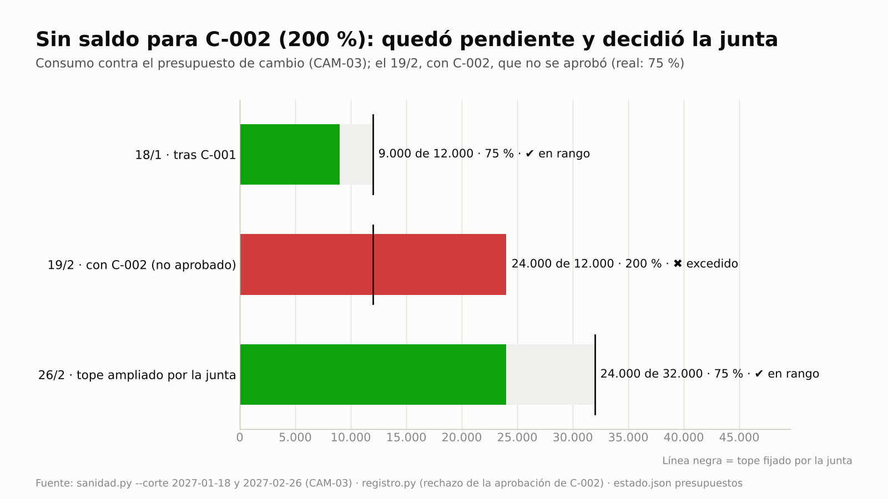
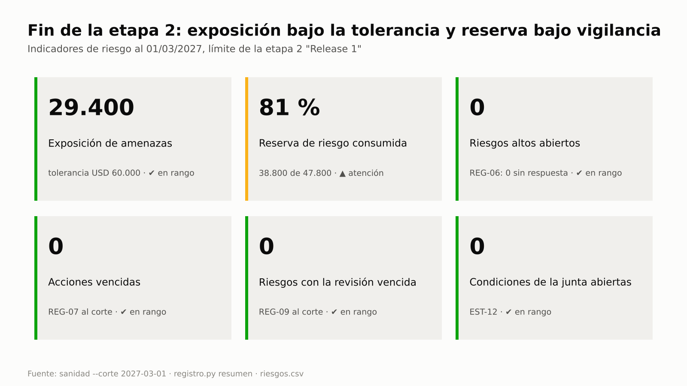

Reunión de la junta
¿Quién aprobó este cambio?
¿Cuánto queda de la reserva?
Presupuesto de cambio fijado por la junta
tope
0 %
✖ excedido
Caso E2E-2 de las guías: un cambio llevó el presupuesto de cambio al 200 %.
Del uso único al control continuo
Lo que hoy se controla…
a mano
una vez
o nunca
pasa a ser un
control permanente ✔
Qué es
Un plugin de Claude Code con una jerarquía fija
PRINCE2 7 · manda
método y ciclo de vida: etapas, puertas, tolerancias
PMBOK 8 · técnicas
EVM, camino crítico, PERT, P×I, VAN
BMAD · especificación
PRD, épicas e historias, de solo lectura
Gobierno
El modelo prepara.
La persona decide.
Los scripts verifican y registran.
Ciclo de vida PRINCE2 · cada transición pasa por una puerta de la junta
◆ puerta verificada
estado.json · decisiones.csv
Controles permanentes
0
controles
en 12 familias
en 12 familias

Caso E2E-2 · presupuesto de cambio

Caso E2E-1 · riesgos al fin de etapa
Estrategia e integraciones
Wardley, recorrido del cliente y opciones con VAN

Caso E2E-5 · mapa de Wardley

Caso E2E-4 · recorrido del cliente

Caso E2E-5 · VAN por opción
Verificado, no solo diseñado
Cifras del repositorio, versión 2.3.0 (20/10/2026): README, PRUEBAS y SEGURIDAD.
pm-method
Gestión de proyectos con IA, con método, gobierno y controles permanentes.
Código abierto · MIT
Claude Code y Cowork
ES / EN
En GitHub
github.com/Arturo-Penas-Rial/pm-method
$ claude plugin marketplace add Arturo-Penas-Rial/pm-method
$ claude plugin install pm-method@pm-method
pm-method · v2.3.0